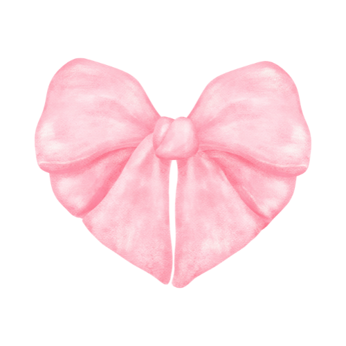

Virtually Nat
AIM Social Media Marketing
CRE-Dense Upload
“Ann interned with me for my company, Virtually Nat, as a social media manager for a month. She is talented with graphics and worked hard to get the content and information out of me, a busy business owner, that she needed to create robust social media strategy, social media calendar and posts as well as hashtag research. Ann worked well with Asana to track tasks and communicate with me and attended weekly meetings to keep deliverables on target. She is a pleasure to work with and I highly recommend her!”
“Ann has been an invaluable member of our team! Her graphics are top tier and her work ethic is outstanding. I wouldn’t hesitate to recommend her!”
“It is my great pleasure to recommend Ann Dinh! As social media manager, Ann has taken the time to discuss ideas and create digital marketing strategies for CRE-Dense Upload. She has helped improve social media for both Instagram and Facebook and look forward to continuing to work together in future projects to come for CRE-Dense Upload. Ann has excellent communication and is always open to new ideas and suggestions. Thank you for all your hard work and we are happy to have you helping us!”